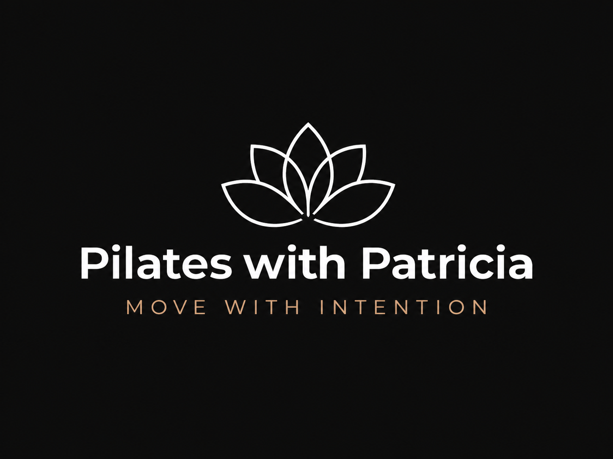
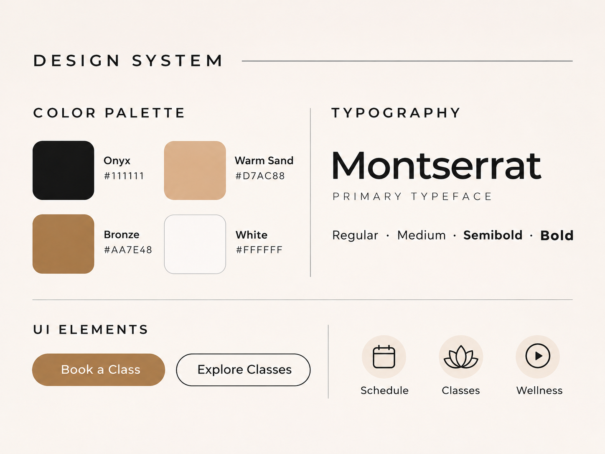

Brand & Visual Identity
Personal Branding · Visual Design
Developed a personal visual identity that reflects my approach to Pilates, emphasizing intentional movement, accessibility, and a welcoming experience for clients of different skill levels.

